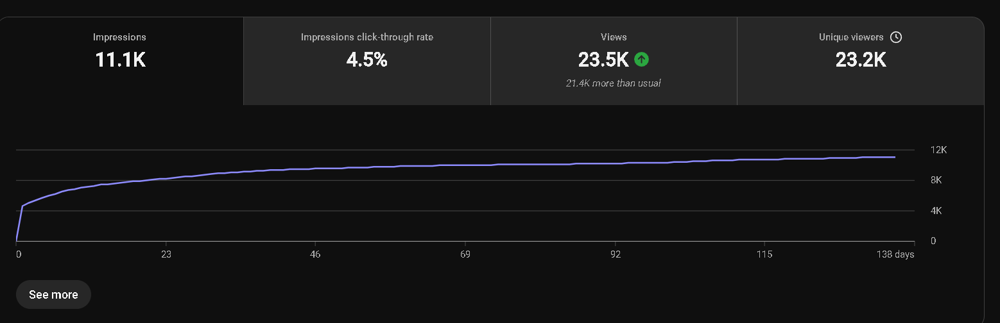
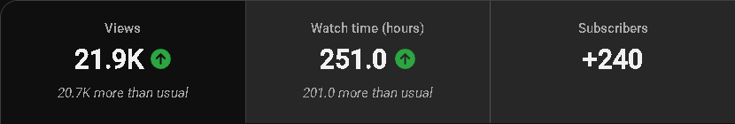

Case 01 / Long-form
Long-form performance
- 21K–23K+
- Selected upload views
- 4.5%
- CTR Upload A
- 251
- Watch hours Upload B
- +240
- Subscribers Upload B
I compare impressions, CTR, viewing depth and subscriber response to identify whether the next decision belongs in packaging, structure, topic selection or distribution.

